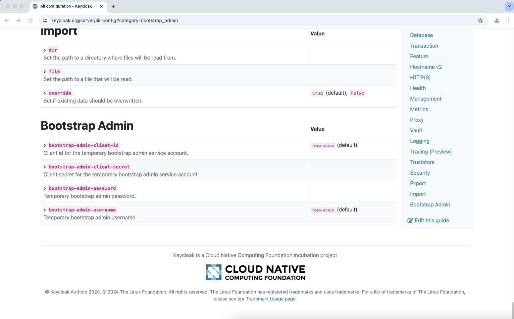

How to configure Keycloak Terraform provider for automated provisioning
Fri 10 January 2025The Keycloak software engineers decided to introduce an admin service account for bootstrapping Keycloak. This configuration option is available since Keycloak v26.0.0 but is currently not mentioned in their admin bootstrap documentation. But it is listed on the summary page for configuration options.
I tested my automated Keycloak provisioning process using the new environment variables KC_BOOTSTRAP_ADMIN_CLIENT_ID
and KC_BOOTSTRAP_ADMIN_CLIENT_SECRET with OpenTofu. It works like a charm.

Thanks a lot to the Keycloak team for providing such an option. It makes life so much easier when you use the Keycloak Terraform provider. Especially when you manage the Keycloak installation with OpenTofu or Terraform as well. This way you are able to install and configure Keycloak in one go.
It took me quite a while to find out about that new feature as it is mentioned hardly anywhere in docs. So I decided to write that article as it might help somebody else to learn about that great new Keycloak feature.